Every account has the ability to generate an API key. Go to your Settings page in the customer portal. You’ll see a spot to generate a new key at the bottom of the page:
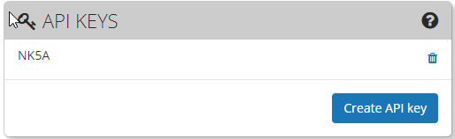
You can now copy the key created.
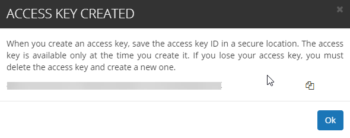
All authorization is completed with this key. Keep in mind that the key you created will give you access according to your account. For example if you are an admin then you have access to all operations. However if you are a viewer role then you only have read access to certain items.
Before starting any coding exercise, start with the Swagger APIs to test certain operations.
Start by authorizing using your API key in step #1.
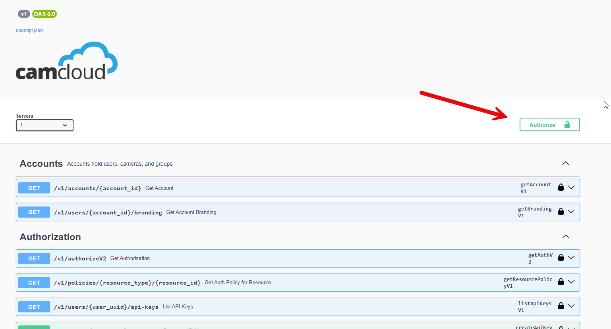
Authenticate with the (bearerAuth) using your API key and press Authorize. Note: Oauth authentication is not currently supported.
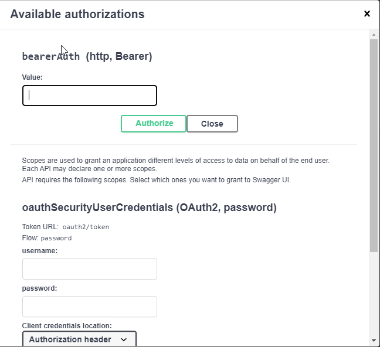
Once you’re authorized you can close this window and start executing any API command.
In order to perform a good amount of the API functions you will need the Account ID and/or the Camera ID.
To obtain the account ID you simply can run the AuthorizeV2 command after you have authenticated your page:
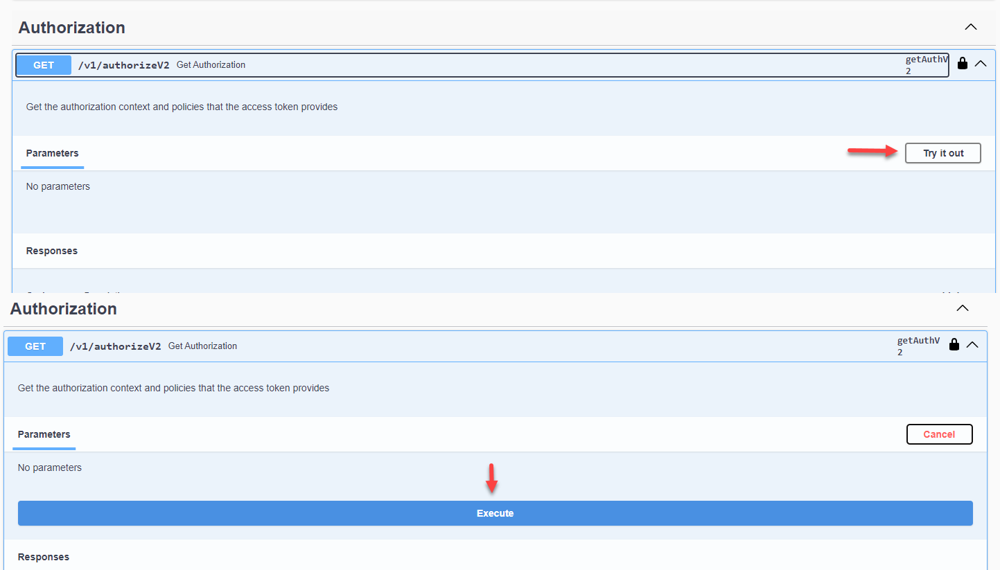
This will result in the following response, where you can obtain your accountID:
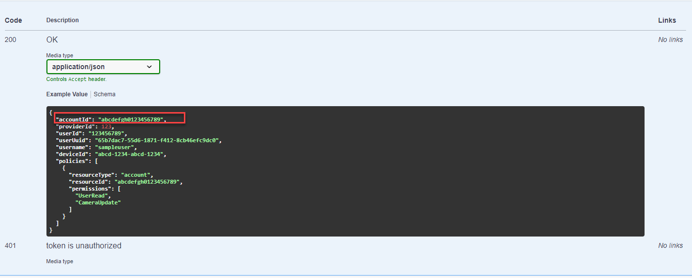
Camera ID
The camera ID can now be obtained using the Account ID with the ListCamerasV1 command:
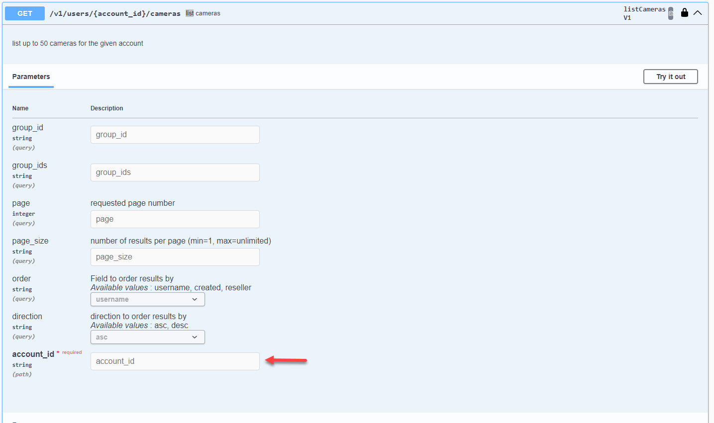
From here you can simply enter the Account ID you’ve obtained with the AuthorizeV2 command and when you execute this command you will be provided a list where you can obtain the camera ID for all cameras on the account:
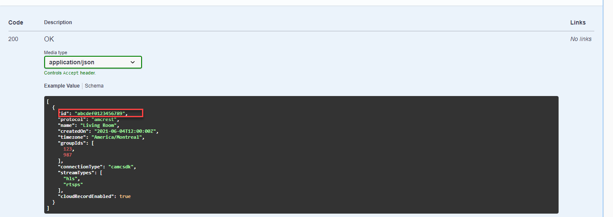
Get a Live View URI
From here you are open to run most of the API commands available, such as StartStreamV1:
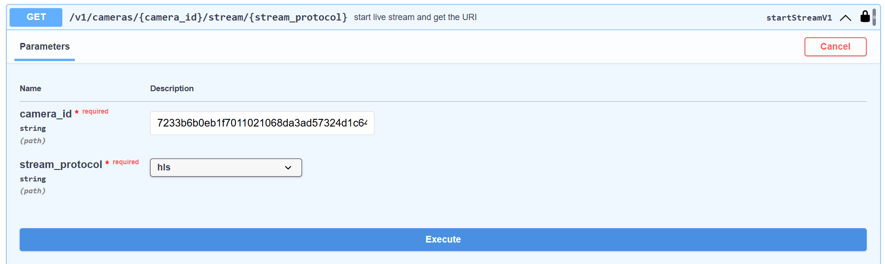
I simply entered the Camera_ID for the camera I want to retrieve a live stream for, selected the preferred stream protocol and clicked execute. I’m then provided with the URI that can be embedded into a webpage or used for third-party integrations.
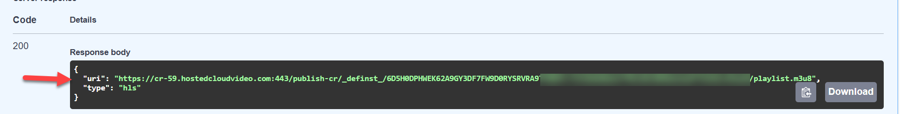
Get a Snapshot
getSnapshotForCameraV1:
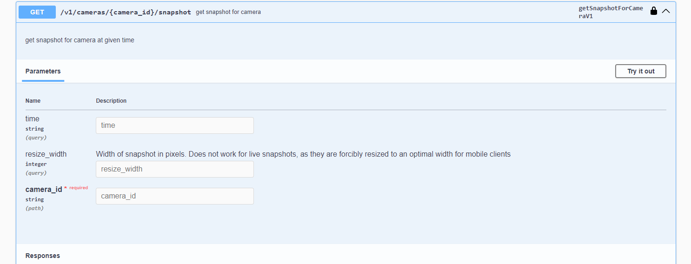
I simply entered the Camera_ID for the camera I wanted and executed the command for a live snapshot of the camera:
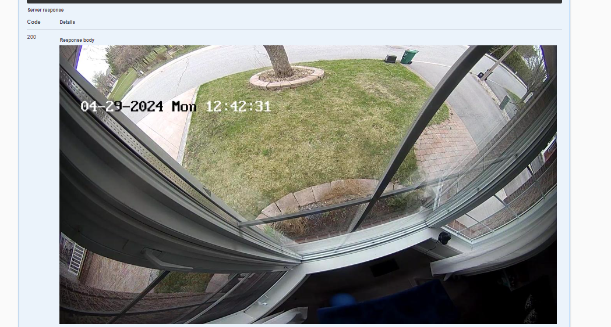
Alternatively you can specify a timestamp using the UTC format (ie: 2024-04-29T16:42:31Z) to get a specific date/time:
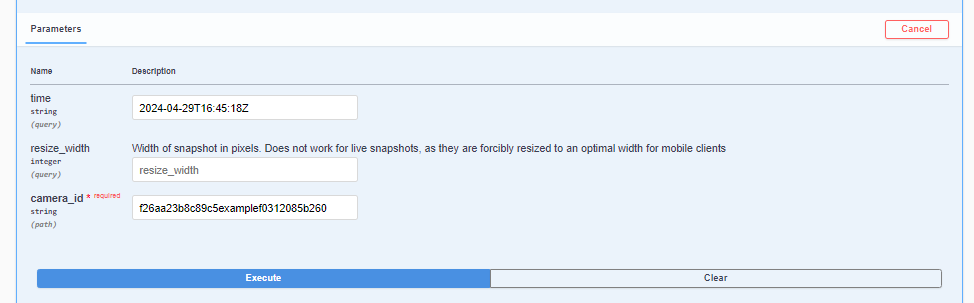